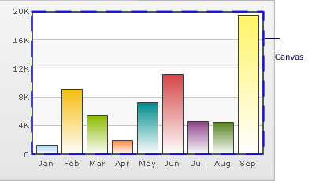
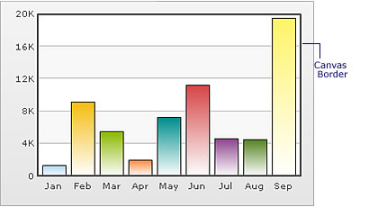
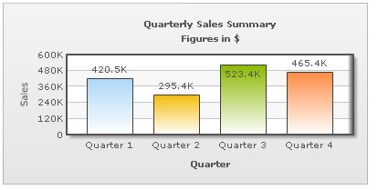

| XML/JSON Attributes for Chart Canvas | |||||||||||||||
Canvas refers to the area in which the chart is plotted. |
|||||||||||||||
|  | |||||||||||||||
| Changing Canvas Fill Color | |||||||||||||||
You can fill the canvas with solid or gradient color. The following attributes let you fill a solid color in the canvas: |
|||||||||||||||
|
|||||||||||||||
Example: <chart ... canvasBgColor='CCCCCC' canvasBgAlpha='80' ...> |
|||||||||||||||
| Customizing Canvas Border | |||||||||||||||
The charts have a border around the canvas as shown below: You can customize the canvas border using the attributes below: |
|||||||||||||||
|
|||||||||||||||
Example: <chart ... canvasBorderColor='666666' canvasBorderThickness='1' canvasBorderAlpha='80' ...> |
|||||||||||||||
| Using gradient fills for canvas | |||||||||||||||
You can also use gradients to fill the canvas. The following attributes let you do so: |
|||||||||||||||
|
|||||||||||||||
Example: <chart canvasBgColor='FFFFFF,FF5904' canvasBgAlpha='100,40' canvasBgRatio='0,100' canvasBgAngle='180'> |
|||||||||||||||
| Applying effects to Canvas | |||||||||||||||
Using Styles, you can apply effects like bevel, shadow, glow, and blur to canvas. Shown below is an example where bevel (right side only) and shadow have been applied to canvas: And the data for this can be listed as below: <chart caption='Quarterly Sales Summary' subcaption='Figures in $' xAxisName='Quarter' yAxisName='Sales'>
...
<styles>
<definition>
<style name='myBevel' type='Bevel' angle='0' />
<style name='myShadow' type='Shadow' distance='5' angle='45'/>
</definition>
<application>
<apply toObject='Canvas' styles='myBevel,myShadow' />
</application>
</styles>
</chart>
{
"chart":{
"caption":"Quarterly Sales Summary",
"subcaption":"Figures in $",
"xaxisname":"Quarter",
"yaxisname":"Sales"
},
...
"styles":{
"definition":[{
"name":"myBevel",
"type":"Bevel",
"angle":"0"
},
{
"name":"myShadow",
"type":"Shadow",
"distance":"5",
"angle":"45"
}
],
"application":[{
"toobject":"Canvas",
"styles":"myBevel,myShadow"
}
]
}
}
You can similarly apply other effects too. |
|||||||||||||||
| Animating the Canvas | |||||||||||||||
Using Styles, you can also animate the chart canvas. For example, the XML/JSON codes below render the grow-effect to the canvas. <chart caption='Quarterly Sales Summary' subcaption='Figures in $' xAxisName='Quarter' yAxisName='Sales'>
...
<styles>
<definition>
<style name='myCanvasAnimX' type='Animation' param='_xScale' start='0' duration='1' />
<style name='myCanvasAnimY' type='Animation' param='_yScale' start='0' duration='1' />
</definition>
<application>
<apply toObject='Canvas' styles='myCanvasAnimX,myCanvasAnimY' />
</application>
</styles>
</chart>
{
"chart":{
"caption":"Quarterly Sales Summary",
"subcaption":"Figures in $",
"xaxisname":"Quarter",
"yaxisname":"Sales"
},
...
"styles":{
"definition":[{
"name":"myCanvasAnimX",
"type":"Animation",
"param":"_xScale",
"start":"0",
"duration":"1"
},
{
"name":"myCanvasAnimY",
"type":"Animation",
"param":"_yScale",
"start":"0",
"duration":"1"
}
],
"application":[{
"toobject":"Canvas",
"styles":"myCanvasAnimX,myCanvasAnimY"
}
]
}
}
|
|||||||||||||||